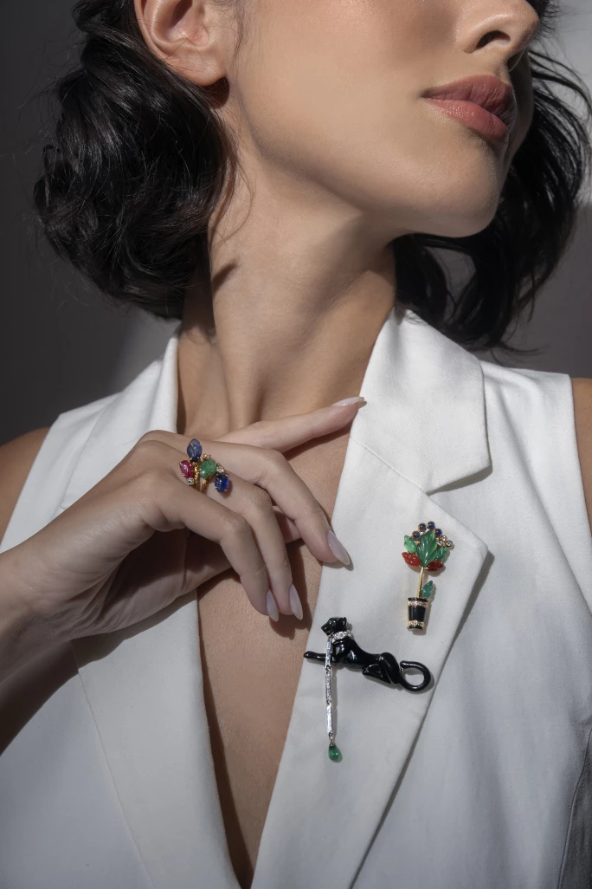
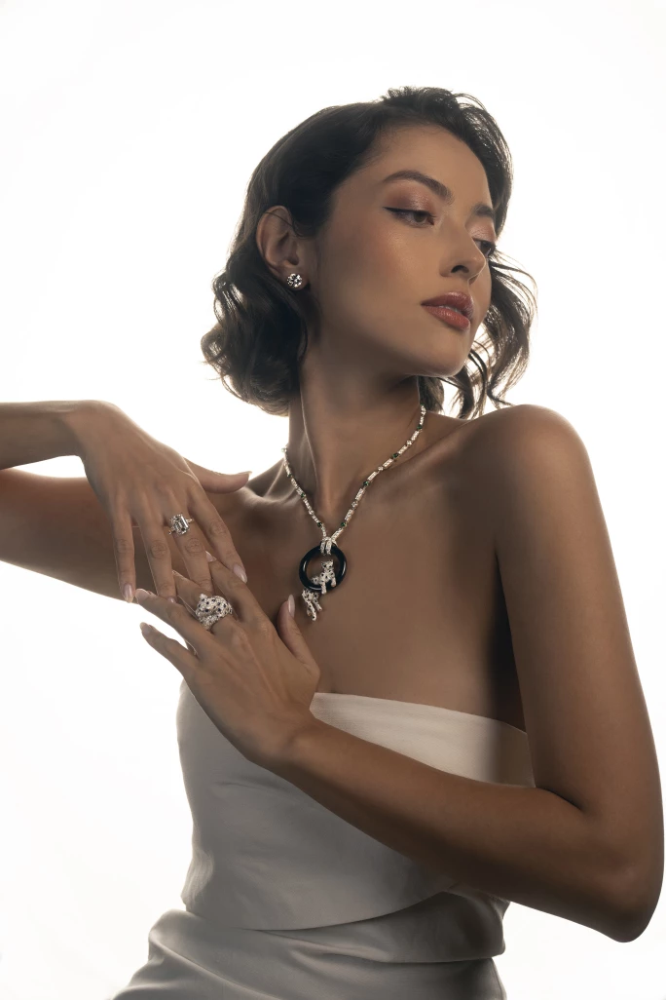
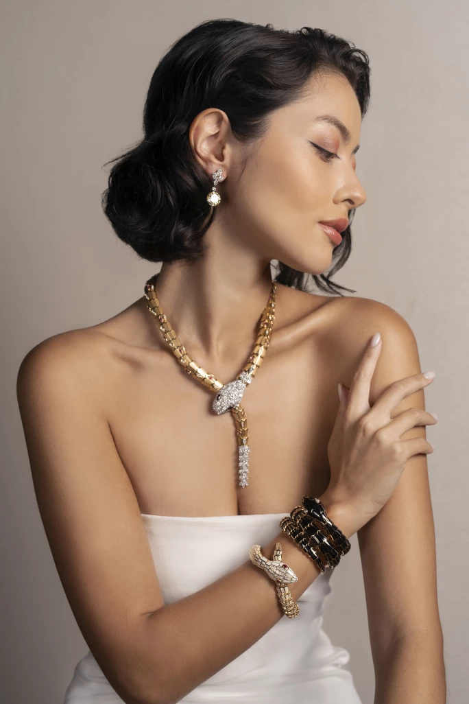
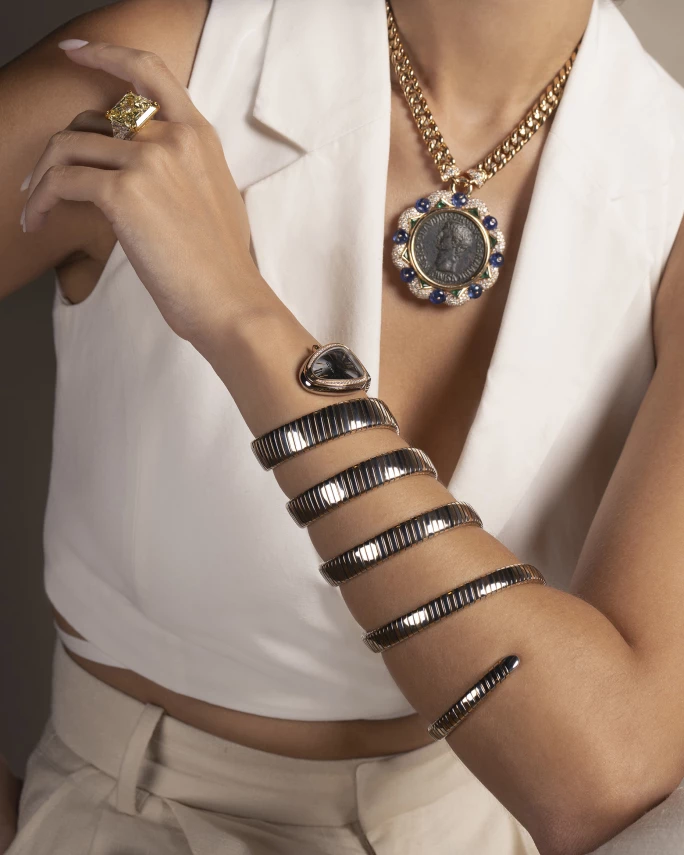

譯自 Carina Fischer · Sotheby's Hong Kong · 2023年7月9日
在今年七月「珍貴珠寶」開拍之前，讓我們重溫珠寶界兩大經典圖騰。
每當說到卡地亞和寶格麗，神氣傲然的美洲豹與婀娜曼妙的靈蛇自然浮現腦海中。這些代表著悠久傳統和精湛工藝的標誌是品牌精神的化身，它們一直在不同系列中蛻變重生，以百變的面貌迷倒眾生。
自 1900 年代初起，美洲豹就成為了卡地亞的代名詞。1914 年，卡地亞推出一幅廣告畫，畫中女子衣著時尚，腳邊靜臥一頭優雅的美洲豹。同年，縞瑪瑙鑲鑽石的美洲豹斑紋圖案首次出現在卡地亞腕錶上。將美洲豹發揚光大的是卡地亞高級珠寶總監珍妮·杜桑（Jeanne Touissant）。她在 1913 年加入卡地亞，路易·卡地亞（Louis Cartier）稱她為「豹女士」（La Panthère）。珍妮·杜桑讓美洲豹從平面走向立體，釋放出原始魅力。1948 年，卡地亞為溫莎公爵夫人打造首件立體的美洲豹胸針，美洲豹自此甦醒過來，踩著莊嚴的步履走向全世界。
杜桑愛豹如癡，她以這頭頂級獵食者的優美和力量為靈感，化造出熠熠生光的珠寶，令美洲豹演變成現今經久不衰的標誌。卡地亞美洲豹採用各類貴金屬和寶石，旋即風靡上流社會，一躍成為名媛的寵兒。卡地亞美洲豹手鐲的豹紋經典如初，除此之外造型不斷推陳出新，美洲豹的雙眼有祖母綠，亦有藍寶石、鑽石和紅寶石等。今年七月蘇富比「珍貴珠寶」帶來兩件黃金豹首飾：鑲祖母綠眼睛和縞瑪瑙斑紋的雙豹頭手鐲，以及一條鑽石配祖母綠長項鏈。此外，1984 年推出的Panthère de Cartier 腕錶系列亦別有新意，潛如夜影的美洲豹隱沒於錶帶的流麗線條中。

卡地亞 | 'Tutti Frutti' 紅寶石, 藍寶石 及 祖母綠 配 鑽石 戒指 ; 卡地亞 | 寶石 配 鑽石 胸針 ; 卡地亞 | 'Panthère' 祖母綠 配 鑽石 胸針 Egill Bjarki

4.22 及 4.08克拉 圓形 D色 完美無瑕鑽石 耳環一對 ; 海瑞溫斯頓 | 9.30克拉 方形 D色 完美無瑕鑽石 戒指 ; 卡地亞 | 'Pantheré' 縞瑪瑙, 祖母綠 及 鑽石 項鏈 ; 卡地亞 | 'Panthère' 祖母綠, 藍寶石 及 縞瑪瑙 配 鑽石 戒指 Egill Bjarki
卡地亞的美洲豹魅力四射，彰顯著獨立自信的精神，歷年來與品牌一同昂首闊步，不停成長，將品牌的願景和靈魂延續至今。
至於寶格麗的標誌，則非Serpenti莫屬。Serpenti除了向羅馬和希臘神話致敬，靈感更是來自喜愛佩戴蛇形首飾的埃及豔后克利奧帕特拉。恰巧的是，傳奇女星伊麗莎白·泰勒（Elizabeth Taylor）1962 年在羅馬拍攝電影「埃及豔后」時，亦佩戴了寶格麗的Serpenti首飾，令這個系列名聲越來越大。那時當紅的女星名媛紛紛愛上這條靈蛇，性感女神蘇菲亞·羅蘭（Sophia Loren）和安娜·麥蘭妮（Anna Magnani）亦不例外，令Serpenti系列逐漸成為寶格麗的品牌象徵。如今，這條風情萬種的靈蛇在贊達亞（Zendaya）、安·海瑟薇（Anne Hathaway）、Blackpink 的 Lisa 和琵豔卡·喬普拉（Priyanka Chopra）的手臂和胸前繼續蜿蜒繾綣。

8.41 及 7.46克拉 濃彩黃色鑽石 配 鑽石 耳墜一對 ; 寶格麗 | 'Serpenti' 紅寶石 配 鑽石 項鏈 ; 寶格麗 | 'Serpenti' 鑽石 及 琺瑯彩 腕錶 ; 寶格麗 | 'Serpenti' 紅碧璽 配 琺瑯彩 及 鑽石 腕錶 Egill Bjarki
在寶格麗Serpenti系列珠寶中，蛇形手鐲最受注目，它採用品牌獨特的Tubogas 技術，而Serpenti腕錶款式的錶盤更巧妙隱藏在鑲寶石的蛇頭中，設計精妙靈巧，盡展蛇的神秘魅力。蘇富比今季Luxury Edit 呈獻一條黃金鑲鑽石 Serpenti 項鏈和兩枚 Serpenti 手鐲，其中一枚鑲紅寶石、鑽石和彩色鱗片，另一枚是縞瑪瑙配黃金。
多年來，寶格麗不斷重新演繹蛇的形象，其中一個代表作是Twirl腕錶，錶帶採用 Tubogas 技術，柔軟的蛇身可盤繞手臂七圈。這次拍賣亦帶來一款雙色的粉紅金配精鋼Serpenti Tubogas Twirl腕錶。寶格麗善於結合不同金屬材質，創造出獨特新穎的設計，完美體現品牌精益求精的宗旨和大膽奔放的風格。
在當今的奢侈品世界中，品牌傳承的價值至為重要。卡地亞和寶格麗的輝煌傳奇早在過百年前開始譜寫，各自旗下的Panthère和Serpenti系列都蘊藏著許多精彩故事和傳統，在珠寶史上留下深刻的印記，足以世代流傳。

11.19克拉 濃彩黃色鑽石 配 鑽石 戒指 ; 寶格麗 | 'Monete' 古代錢幣 配 藍寶石, 祖母綠 及 鑽石 項鏈 ; 寶格麗 | 'Serpenti Tubogas' 粉紅色碧璽 及 鑽石 腕錶 Egill Bjarki